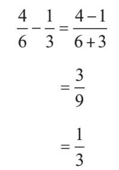
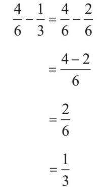

千层酥千层酥
千层酥千层酥配料
450克高筋面粉
450克黄油
冷水
盐少许
方法
……
将以上这些简单的配料组合起来的方式有很多，但其中的大多数都无法让你做出千层酥。制作千层酥是一个很耗时的过程，很多步骤都对精确性有要求，其中就包括反复的冷却、擀皮和折叠，以制作出千层酥区别于其他面点的美味的奶油“千层”。因为整个制作过程十分复杂，千层酥素来以难做著称。相比之下，它的一个变种，油酥松饼则简单很多。制作油酥松饼需要的配料和千层饼一样（除了黄油使用量更少），而你只需要把配料扔进食物处理机就可以把它做出来了。
数学的魅力之一就在于，像做甜点一样，你可以用很简单的配料做出很复杂的成品。当然，复杂烦琐的制作过程也可能会让你感到挫败，就像做千层酥一样。就我个人而言，我倒不觉得做千层酥有那么复杂，只要严格遵循食谱所写步骤去做就可以了。但我相信，即使你不想自己尝试去做，你仍然可以欣赏用如此简单的配料能做出如此美味的甜点这一事实。数学不只是关于结果，它更多地是关于理解得出结果的过程。
并不只是关于从A地到B地
2005年，我参加了纽约市马拉松比赛。我觉得这是一个了不起的成就，所以每每有机会我都会跟人炫耀一番。不过老实讲，说我“跑”了马拉松多少有点儿言过其实——更准确的说法是，我“小跑”着完成了马拉松。但无论如何，我确实从起点出发并最终到达了终点，而且有照片为证。
纽约市马拉松比赛与其他城市的马拉松比赛有所不同，因为它要求参赛选手从A地跑到B地，比如从史坦顿岛出发，最后跑到中央公园。而其他城市的马拉松比赛，以芝加哥市马拉松比赛为例，选手需要从格兰特公园出发，按照特定路线跑完一圈后最终又回到格兰特公园。然而，没有人会将从A地出发抵达B地视为马拉松比赛的意义——它的真正意义在于你如何到达终点。如果马拉松只是关于到达终点本身的话，那么芝加哥市马拉松比赛的参赛选手只要站在原地不动就可以了。
告诉别人你跑过马拉松，与告诉别人你是数学家多少有些类似——有些人会觉得你太了不起了，另一些人会觉得你疯了——怎么会有人想去做这件事？
意义更多地在于过程本身，而不只在于抵达终点。有些旅行的目的就是到达一个目的地（比如早上去单位上班），但其他更多的旅行是关于在途中发现新事物或欣赏美景的。人们很容易将数学理解为一个想办法得出正确答案的过程，而一部分数学分支的确如此。但范畴论更像纽约市马拉松比赛，更多地是关于探索的过程，以及你在这个过程中观察到的事物。它不是关于你具体知道什么，而是关于你究竟是怎么知道的。后者是一个更为微妙的问题。如果我问你“你知不知道某某事”，那么你给出的答案无非是或否。但如果我问你“你是怎么知道这件事的”，那么你的答案就可能很长、很复杂，而且远比你是否知晓这个事实性答案更有趣。
并不只是关于结果
假设你口袋里有一张10英镑的钞票。现在，趁你不注意的时候，有人偷了你的钞票。然后，更加奇怪的事情发生了，另一个人偷偷把一张10英镑的钞票放进了你的口袋。对一切完全不知情的你始终相信你口袋里有一张10英镑的钞票，而事实的确如此。但是，你得出此结论的原因完全是错的。那么，你到底是对的还是错的呢？你的结论是对的，但你的推理过程是错的。
在数学里，这个答案会被认为是一个错误答案，因为我们感兴趣的是得到正确答案的过程，而不只是答案本身。
以下是一个通过错误推理得到正确答案的例子：

最终答案是正确的，但分数减法的运算方法是错误的。正确的算法是把两个分数通分，将其分母转化为最小公分母6：

手段大于结果
如果有人感到开心，但你觉得他们感到开心的原因是错的，你会干涉他们吗？假如他们是因为一直酗酒而开心，或者是因为相信自己是上帝而开心呢？或者，假如他们是因为他们相信一个你并不相信的上帝在照看他们而开心呢？
你会更希望他们转变认知，在认清现实的同时丧失快乐吗？换句话说，只要目的正当、结果正确，就可以不择手段吗？
在数学中，我们永远不能为了结果而不择手段。我们必须选择正确的方法来证明某个命题的正确性，这也是数学方法存在的根本原因。这个过程被称为数学证明，很快我们就会看到它具体是什么样子的。
为什么数学并不只是关于得到正确答案
在我给我的学生们出的数学测试题里，我会标明哪些是他们必须将运算分解成很多小步骤写出来的题目。而我往往会发现，在某些步骤中，他们很容易把正号和负号搞混，从而因为多除了一个-1而把最终答案写错。如果正确答案是100，他们很可能会得到-100的错误答案。
问题是，如果他们犯了两个这样的错误，答案就碰巧被修正了，最后他们会得到正确答案100。我记得在某次测试的一道运算题中，大概在其中的6个步骤中，这样的错误都是很容易发生的。所以，只要他们犯错的次数是偶数次，他们就会得出正确的答案，但事实上，在这个正确答案的背后，很可能是其推理过程中的2个、4个或6个错误。
在数学科学中，除了算数和其他你在中学能学到的数学知识以外，对于其他所有的数学分支来说，你能肯定你的答案是正确的唯一方法就是确保你的推理过程是正确的。这可不像寻找埃菲尔铁塔，当你看到埃菲尔铁塔出现的时候，你就知道你找到它了，因为每个人都知道埃菲尔铁塔的样子。这更像是古代探险家的探索活动，他们没有全球卫星定位系统，也没有地图，所以他们知道自己在哪里的唯一办法就是非常小心谨慎地规划路线。
为什么孩子们有他们的理由
如果你有跟三岁孩子相处的经验的话，你就会知道他们会不停地问为什么，从不停下。
“我为什么不能吃更多的甜点？”
因为你已经吃得够多了。
“为什么？”
因为不然的话，你就会摄入过多的糖，然后你就会睡不着。
“为什么？”
呃，因为你的血糖水平会急剧上升，你的代谢率也会突然上升，然后……
不幸的是，我们往往会选择压抑孩子问为什么的天性，仅仅因为被问了几次以后我们就会感到厌烦，因为我们很快就到了回答不出来的时候。并且，我们不喜欢被迫承认“我不知道”，因为大多数时候我们都不喜欢被挑战理解能力和知识储备的极限。
但孩子们的这种本能仍然很美好，这是知道与理解之间的差别。有些时候，孩子们只是想缠着大人，或者推迟睡觉时间，但我认为大多数时候，他们是真的被某些问题困扰着，想要更好地理解它们。
数学的核心就是理解事物，而不仅仅是知道它们。在某种意义上，我从未停止过像一个学步期的孩子一样问“为什么”。数学是我认为可以用来探索那些问题的答案的最让人满意的方法。因此，不可避免地，我开始对数学本身提出“为什么”，而这就是范畴论开始的地方。
在数学里，我们用“证明”的方式来解答关于“为什么”的问题。数学里的证明比我们在日常生活中用到的证明更为有力。正如我们在第二章提到的，这种证明并非关于搜集证据，而是关于运用逻辑。
例如，你也许想要证明所有的乌鸦都是黑色的。于是你开始找乌鸦。你看到的第一只是黑的，第二只也是黑的，第三只还是黑的。你继续找下去。那么，什么时候你才能肯定你已经找到足够的证据说明所有的乌鸦都是黑色的呢？在你找到一百只以后？一千只以后？一百万只以后？即便你真的做到了，这个世界上还是可能有一只古怪的紫色乌鸦存在。
问题在于，乌鸦的特征并不遵循逻辑，因而试图用逻辑证明它们只有某种颜色很难。比如，你可能必须找到一些不可辩驳的基因证据才能说明乌鸦只能是黑色的。
这就是为什么在数学里我们只关注那些遵循逻辑的事物。事实性的证据为我们提供了一个开端，让我们可以坐下来尝试着运用数学方法进行论证——但这个基于实证的假设仍然可能是错的。事实上，在很多时候，你会发现某个有充足“证据”的假设，并认为它很可能是正确的，于是你决定坐下来试着用数学方法来论证它的正确性，结果却发现它完全是错误的。
举个例子，如果我们想要证明下面这个假设：
所有的正方形都有四条边。
这个例子看起来有点儿蠢，毕竟正方形的定义就规定了它有四条边。（乌鸦的定义有没有规定它必须是黑色的？）但如果我们要证明这个命题，我们就不能仅仅是因为“定义如此”就简单认定它是正确的。
或者，让我们试试证明下面这个假设：
所有能被6整除的数字都能被2整除。
我们可以先试着找一些证据。哪些数字能被6整除呢？12肯定可以，并且它也能被2整除。18呢？是的，也能被6和2整除。24呢？也可以。此时，你就可能产生一种这个假设应该没错的感觉。这种感觉是很重要的，在此基础之上，你才会希望证实这种感觉是对的，从而最终真正确信假设的正确性，而说服人们确信某事正是数学的使命。
你能证明为什么以上这个假设是真的吗？你也许会意识到这与6是一个偶数有关。
试一下24。我们知道24可以被6整除是因为：
24=6×4
并且，
6=3×2
所以我们可以将第二个等式带入第一个，得到：
24=3×2×4
这也就说明了24可以被2整除。我们还可以把4继续分解成质数相乘的结果，得到24的质因数分解，这是我们在前一章讲过的：
24=3×2×2×2
但这里我们不需要把24进行质因数分解——只要分解出一个2，我们就知道24可以被2整除了。
这是不是意味着所有能被6整除的数字都必须是偶数呢？事实上的确如此。现在我们来看一下为什么。首先，我们应该用以下这种表达来更精确地陈述这个事实。我们用字母A来替代“所有数字”。
如果A能够被6整除，并且6能够被2整除，那么A就能够被2整除。
我们现在可以将这个结论进行推广，用任意数字B替代6，用任意数字C替代2。由此，我们就得出以下事实：
如果A能够被B整除，并且B能够被C整除，那么A就能够被C整除。
对于用字母来替代所有数字这种做法，你感觉如何？这个步骤是很多人对数学感到不习惯的开始。对有些人来说，这个抽象化的步骤太复杂了，但它带来的好处很明显：我们现在对数字的规则有了更广泛的理解，而不只是知道一个特定的关于数字6和2的事实了。因为A、B和C可以是任意数字。
并且，这一抽象化步骤能让我们从一个更宏观的视角来看待这个问题，从而找到与这个结论类似的其他情形。你能看出以上含有A、B和C的结论与下面几个结论的共通之处吗？
• 如果 A比B大，并且B比C大，那么A就比C大。
• 如果A比B便宜，并且B比C便宜，那么A就比C便宜。
• 如果A等于B，并且B等于C，那么A就等于C。
此类关于A、B、C的关系被称为“传递性”（transitivity）。数学家们给了这类关系一个名字，因为它们在许多情形下都会出现，而通过命名，我们便可以迅速指认它们，并提醒自己注意其他类似的情形。以下是一些你可以试着应用这种传递性的其他关系。
假设A、B和C都指人。
1.如果A比B年龄大，并且B比C年龄大，那么A是否比C年龄大？
2.如果A比B高，并且B比C高，那么A是否比C高？
3.如果A是B的妈妈，并且B是C的妈妈，那么A是否是C的妈妈？
4.如果A和B是姐妹，并且B和C是姐妹，那么A是否是C的姐妹？
5.如果A和B是朋友，并且B和C是朋友，那么A是否是C的朋友？
6.如果A和B是夫妻，并且B和C是夫妻，那么A和C是否为夫妻？
7.假设A、B和C均指地点。如果A在B的东面，并且B在C的东面，那么A是否在C的东面？
问题1和问题2的答案必然是肯定的。但问题3不是——如果A是B的妈妈，并且B是C的妈妈，那么A就是C的外婆。因此我们得出结论，即某人是另一人的母亲这件事并不具有传递性。不过，某人是另一人的姐妹这件事是有传递性的。那么某人是另一人的朋友这件事呢？你是你朋友的所有朋友的朋友吗？
那么和某人结婚这件事呢？如果我们生活在多配偶制被法律禁止的社会中的话，你就只能跟一个人结婚。也就是说如果A和B是夫妻，并且B和C是夫妻，那么A和C就必须是同一个人。也就是说，A和C肯定不是夫妻。
最后我们来看看第7个问题。如果A、B和C这三个地点都在同一个城市或国家的话，这个问题的答案就是肯定的。但如果这三个地点是地球上的任意地点的话，问题答案是否肯定就不确定了，因为地球是圆的，你可以往东一直走下去，最终回到原点。在这个例子里，比起允许三个地点是世界上的任意地点，设定一些限制（比如三个地点在同一个城市或国家） 能让这个问题变得更容易理解。
能让这个问题变得更容易理解。
现在让我们回到数字的例子。“可以被某个数整除”具有传递性。但为了有效地证明这个结论，我们需要把“可以被某个数整除”变成一个可以用逻辑规则来检验的精确描述。这又是另一个可能让人们感到不习惯的步骤。为了能够运用逻辑规则，我们必须离开我们已经熟知的那些关于数字的知识和情境，离开我们的舒适区。但这一做法的长远回报是巨大的——有很多领域是你可以借助逻辑推理来理解却无法用本能和直觉来理解的。就像你必须离开舒适的家才能登上飞机去看世界一样。具体而言，在我们这个整除的例子里，这个步骤是这样做的：
A可以被B整除，
意味着，
A是B的整数倍，
也就是说，
A＝k×B，其中k是整数。
现在我们可以开始论证了。当我们用精确的数学语言来描述这个问题时，我们会使用一种非常特殊的描述结构，从而让每个人都能理解并同意你所描述的东西。这就像是在写一个有开头、中间情节和结尾的故事，只不过在告诉每个人中间情节是什么之前，你先告诉了他们结尾是什么。
开头就是你对于假设和定义的描述。就像设定故事的主要场景，或者在戏剧的开场列出全体演员的名单一样。它很可能看起来就像这样：
定义 对于任意自然数A和B，只要A＝k×B，并且k是自然数，我们就说A可以被B整除。
现在我们告诉所有人这个故事的结尾是什么，也就是我们的目标结论。在数学里，对不同结论的命名有高下之分，这取决于结论的重要性和开拓性。一个重要性较小的结论被称为“辅助定理”或“引理”（lemma），一个中等重要的结论被称为“命题”（proposition），一个相当重要的结论被称为“定理”（theorem）。当人们觉得一个结论可能为真，但该结论还未被证明，那么这一结论就被称为“猜想”（conjecture）或“假说”（hypothesis）。因此，我们有“庞加莱猜想”和“黎曼猜想”，也有“费马大定理”。
事实上，数学家们在给这些结论命名时并非总是意见一致：一个结论该被叫作“猜想”还是“假说”并没有非常确切的标准。不仅如此，以费马大“定理”为例，费马大定理一直被称作“定理”实际上并不合规，因为它是在这样被命名了358年后才有人发表了对它的第一个证明。在此之前，它只是一个未被验证的猜想或者假说。此外，还有一些非常重要的结论却被称作“引理”，这听起来像是假谦虚，实际上则很可能是因为在最开始完成论证时，它们的重要性还未被充分认识到。
庞加莱猜想讨论的是哪些三维形状是可能存在的。它是对于以下二维定论的三维版推论：如果一个二维的曲面没有棱角，并且这个二维曲面是一个没有洞的三维实体的曲面，那么这个二维曲面一定是球面。我们很难想象这个结论的高维推论，因为这要求我们想象出四维的实体——一个难以视觉化，却很容易借助数学推导出来的概念。昂利·庞加莱在1904年提出这个猜想，它被称作“猜想”是因为庞加莱不知道怎么证明它。直到100年后，这个猜想才最终被格里戈里·佩雷尔曼证实。
黎曼猜想是关于质数分布的。质数就是只能被1和它本身整除的数，最初的几个质数是2、3、5、7、11、13、17……你也许觉得它们应该有某种规律，但其实不然：我们无法预测质数会在哪里出现。但我们有办法预测它们更可能出现在哪些地方，黎曼猜想就是一个很好的预测方法。波恩哈德·黎曼于1859年提出了这个猜想，但该猜想直到今天仍未被最终证明，所以到目前为止，它仍然被称作“猜想”。
我们想要证明的关于整除性的结论是关于数字的一个比较重要的结论，所以，依据前文的定义，我把它称作一个命题。
命题 如果A可以被B整除，并且B可以被C整除，那么A就可以被C整除。
我已经告诉了你故事的开头和结尾，现在，我要告诉你这个故事最重要的部分了：中间情节，也就是从开头走向结尾的整个过程。这就是数学证明。
证明：
假设：
1. A可以被B整除，即A=k×B，其中k为自然数，并且
2. B可以被C整除，即B=j×C，其中j为自然数。
则A=k×j×C，并且k×J是自然数。
所以A=m×C，其中m为自然数。
因此，根据定义，A可以被C整除。
证明完毕。
数学家并不会真的在证明的结尾写上“证明完毕”这几个字，他们通常会画一个正方形表示证明完毕，或者写下“QED”这三个字母，即“quod erat demonstrandum”的缩写，该短语可大致翻译为“这就是我们试图证明的结论”。
你有没有跟上我们刚刚的证明步骤？你是否在我们探讨证明过程之前就对原先的结论感到很满意了呢？下面有另外一些关于“为什么”的问题及其对应的不同强度的答案。你可以问问自己，对于这些答案，你是会认为它们不够有说服力，还是对其感到满意，抑或认为这种解释过于复杂，没什么必要呢？根据你的答案，你可以判断出你更适应哪种程度的抽象。
1. 因为三脚凳比四脚凳更为牢靠。
2. 因为当你把四脚凳放在地上时，其中一只脚可能会因为比另外三只脚高出一些而无法完全与地板贴合，这样一来这个凳子坐起来就会没有那么稳固。
3. 因为经过三维空间中的任意三点的平面有且只有一个，而经过三维空间中任意四点的平面可能并不存在。
1. 因为八度音本质上是同一个音的两个版本，所以它们组合在一起听起来很和谐。
2. 因为八度音是一种天然泛音，所以当你弹其中一个音的时候，比它高八度的和声就已经产生了。
3. 因为高八度音的波长是低八度音的波长的一半，所以它们彼此不会干扰。
在以上每个例子里，所有三个答案都是正确的，但它们分别提供了不同强度的解释。现在，请你问问你自己，你是对第一个答案感到满意？还是仍然好奇，想要寻求更深层次的解答？你的选择完全属于个人偏好，其关乎你愿意将哪种事实认同为“基本”事实或“既定”事实。除了逻辑规则，数学几乎不假定任何事实是基本的或者既定的——它总是在寻求更深层次的解释。
也许听起来不像，但这个问题其实是一个真实存在的数学问题。数学家会通过先将目光聚焦于小的区域来研究复杂的大区域问题。他们甚至会在数学分析中用到“社区”这个词。